A city of culture, rich history, and fantastic food, Paris lives up to its iconic reputation in many ways. With notable landmarks including the Eiffel Tower, the Louvre, the Notre Dame, and the Arc de Triomphe, there is a long list of attractions that entice tourists from all over the world. If you get hungry, go visit one of the many Michelin-starred restaurants this city has to offer.
This magnificent city houses treasures like the Mona Lisa, and the Musée d'Orsay, showcasing various impressionist masterpieces. From the romantic allure of the Champs-Élysées to the winding Seine river, Paris is a magical place that cannot be rivaled.
Photo Gallery
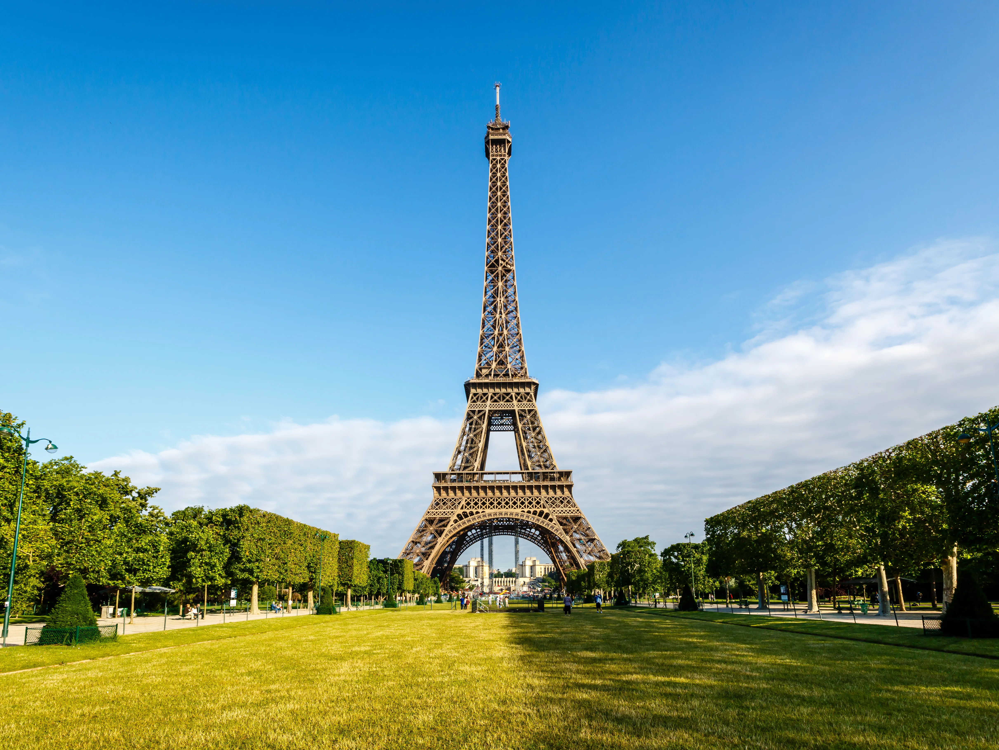
The magnificent Eiffel Tower in all it’s glory.
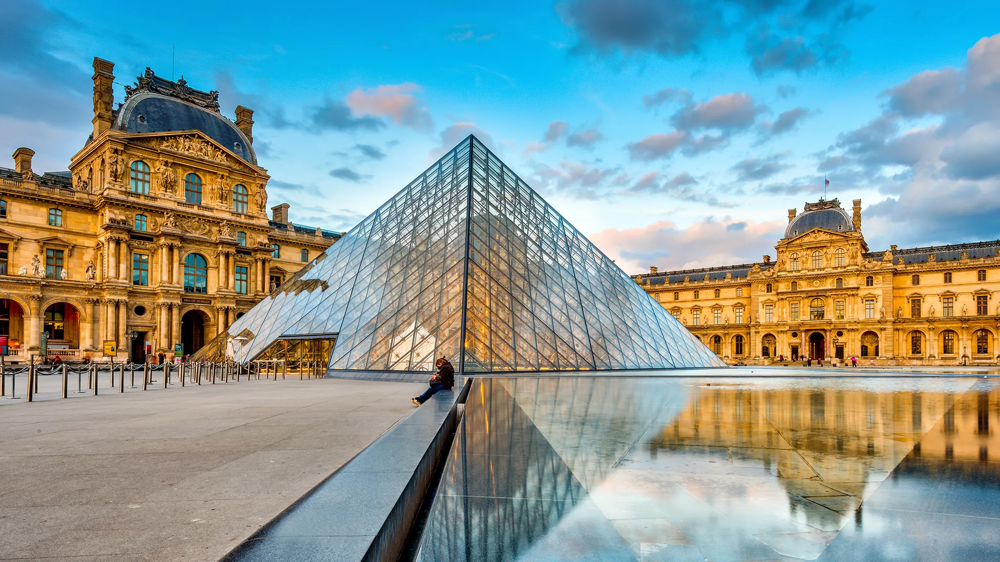
The Louvre hosts some of the most famous works of art in the world, including the Mona Lisa.
The Notre Dame is an iconic cathedral known for its Gothic features and dark history Arc.
The Arc de Triomphe is a famous monument dedicated to those who fought and died during the French Revolution.
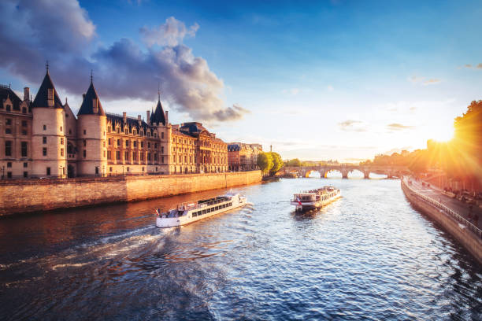
Dramatic sunset over the river Seine
Barcelona
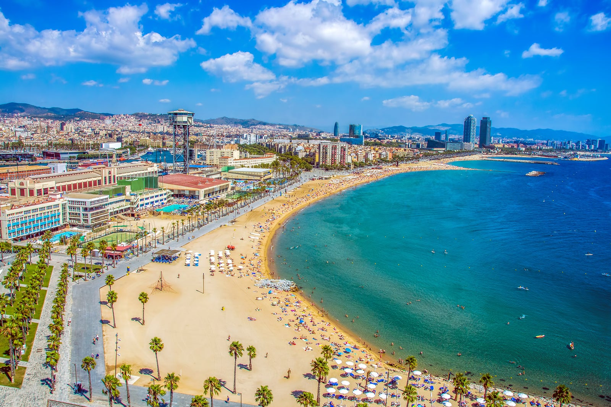
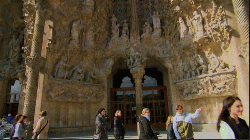
Geographical Location: Europe
Barcelona is a wonderful destination in Spain with all the necessities for a perfect vacation. It has a population of roughly 1.6 million people and is located right on the beach of the Mediterranean Sea. It is a hub of Art and Architecture as well as technology and contains a vibrant culture.
There are many activities to do in Barcelona as well as things to see. One of the most popular activities is to visit Camp Nou and watch the amazing Barcelona FC soccer team play against various other teams in La Liga. There are also many architectural masterpieces designed by Antonio Gaudi to explore such as various Gaudi Houses and Parks and La Sagrada Familia, the largest unfinished catholic church in the world.
Photo Gallery
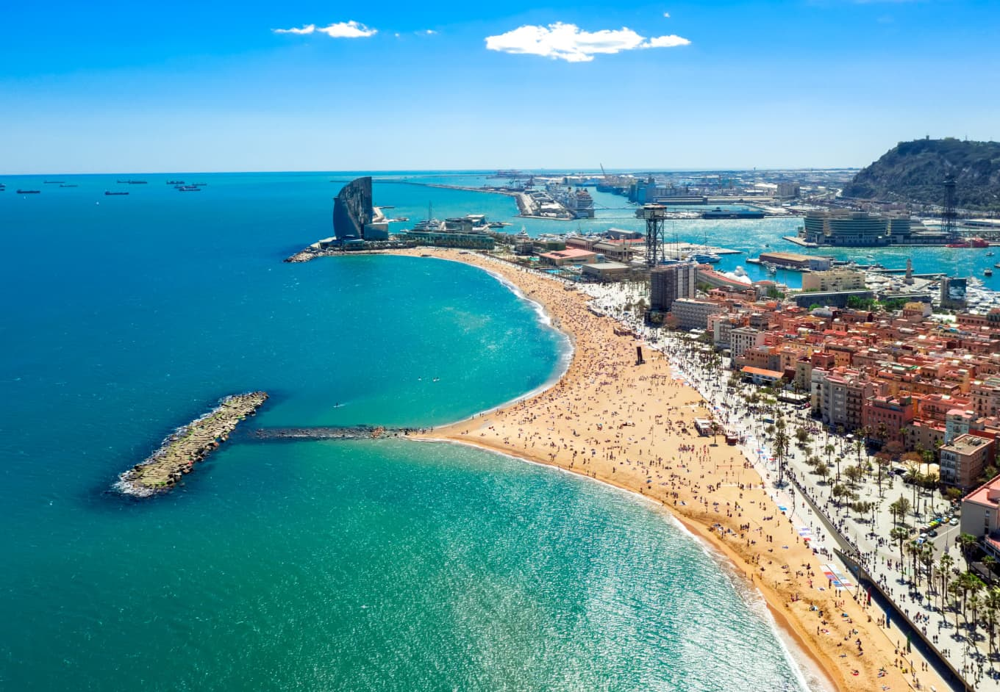
Beach in Barcelona
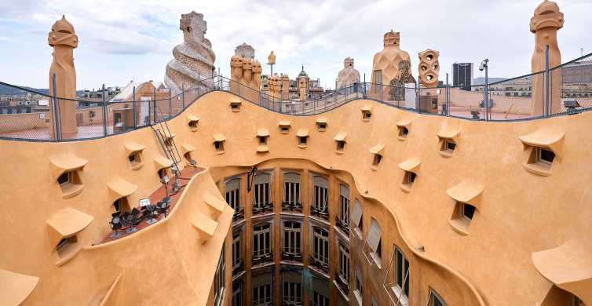
Roof of a Building designed by revolutionary architect Gaudi
A Barcelona soccer player dribbles past 3 defenders
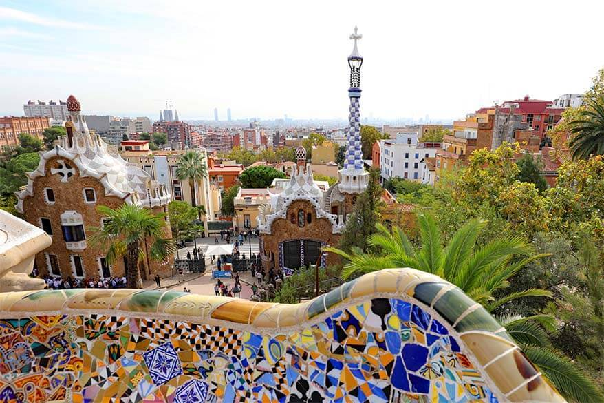
A Balcony and Two houses designed by Architect Gaudi
Large church still under construction designed by Architect Gaudi
Mexico City, Mexico
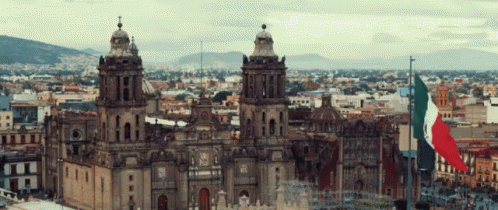
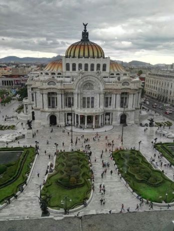
Geographical Location: North America
Mexico City is the capital of Mexico. The city is full of Museums that vary from history, art,
and even the history of the Mexican coin. In 2020 the Mexico city total population. was about 9.2 million
The city is 571 miles squared
For tourists, there are places like an amusement park called Feria de Chapultepec and giant zoo Zoológico de Chapultepec that are a must visit. In the photo gallery there are also major attractions to visit.
Photo Gallery
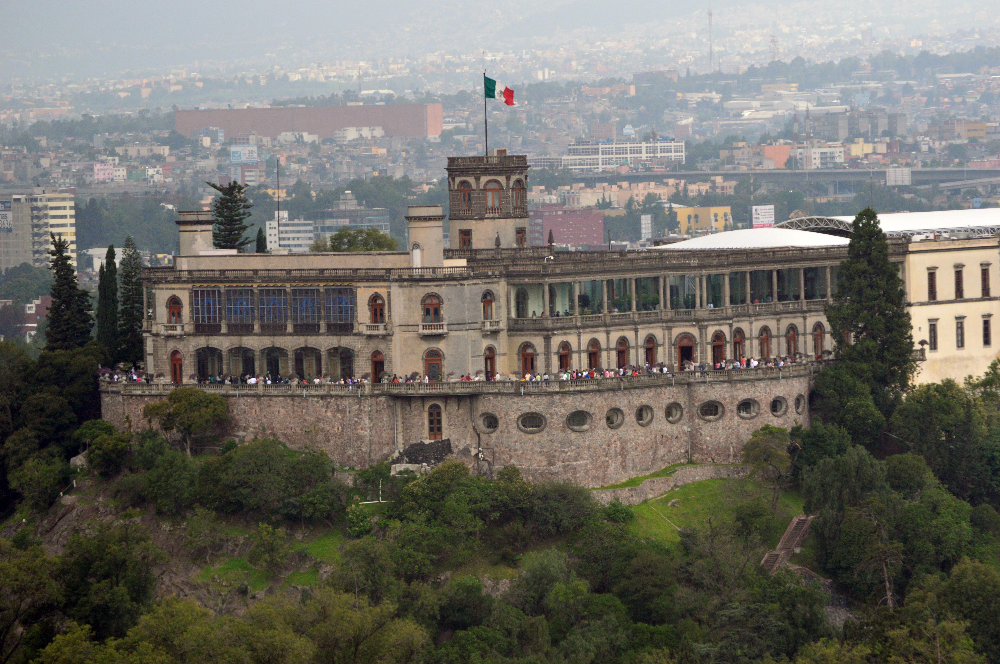
Castillo de Chapultepec (Chapultepec Castle) is a castle that is located in Miguel
Hidalgo, Mexico City.
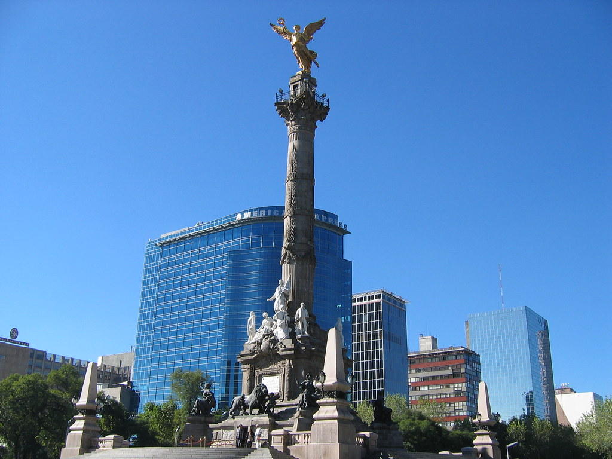
Angel de la independencia (Angel of Independence) is an important monument located in Cuauhtémoc, Mexico City.
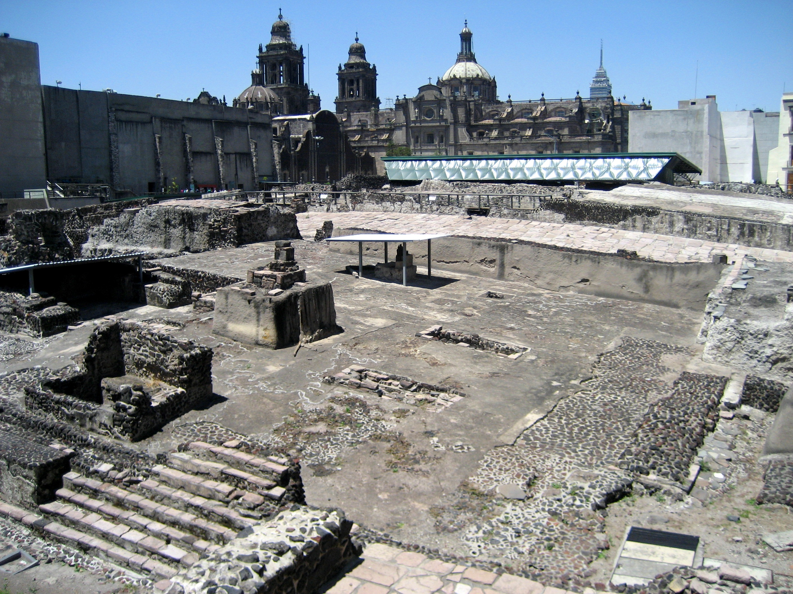
Templo Mayor (Mayor Temple) is a museum that is built by the ruins of an ancient temple.
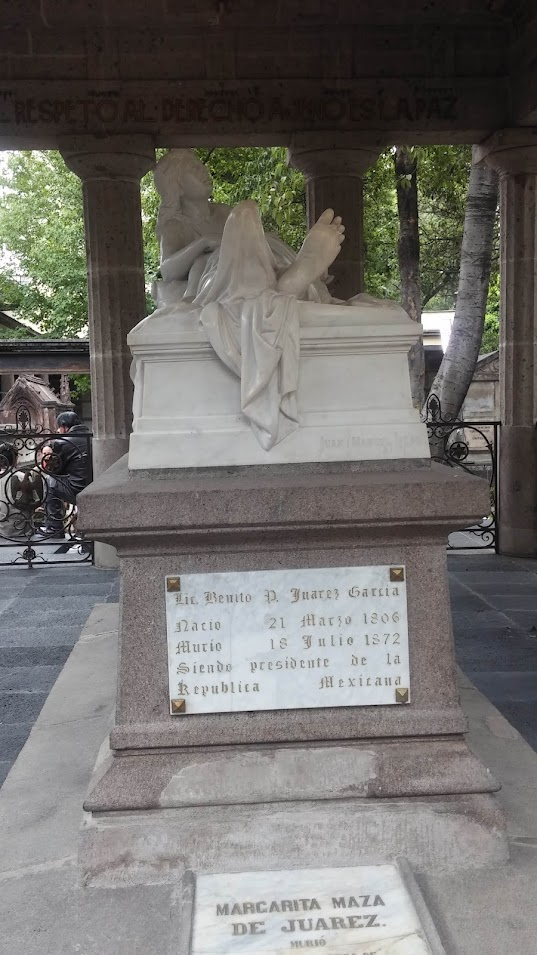
This is the tomb of Margarita Maza de Juarez who was the wife of Benito Juarez
(A historical president).
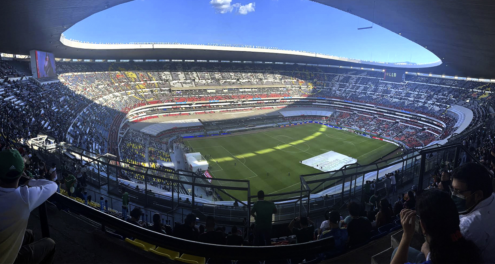
Estadio Azteca is the stadium where the national Mexican soccer team
plays and the team Club América.